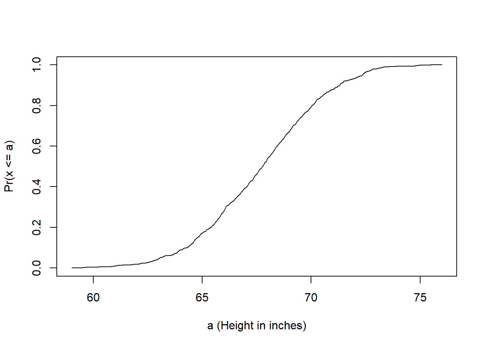
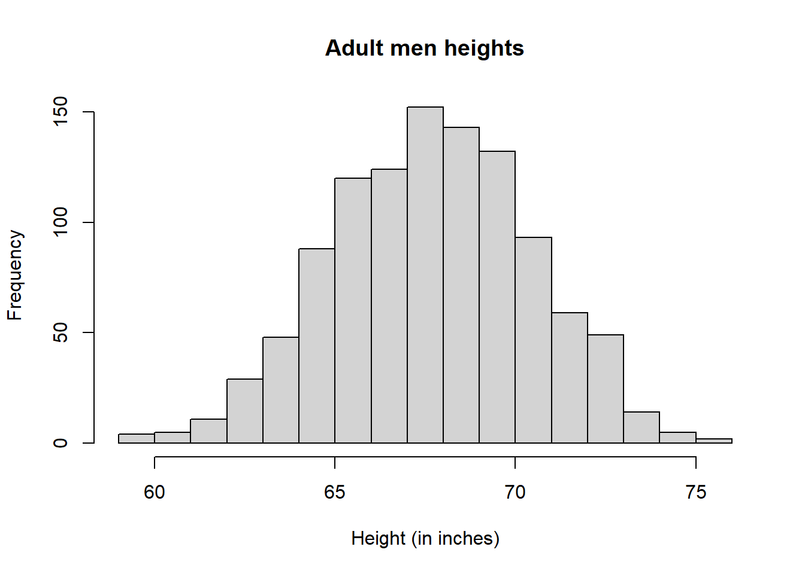
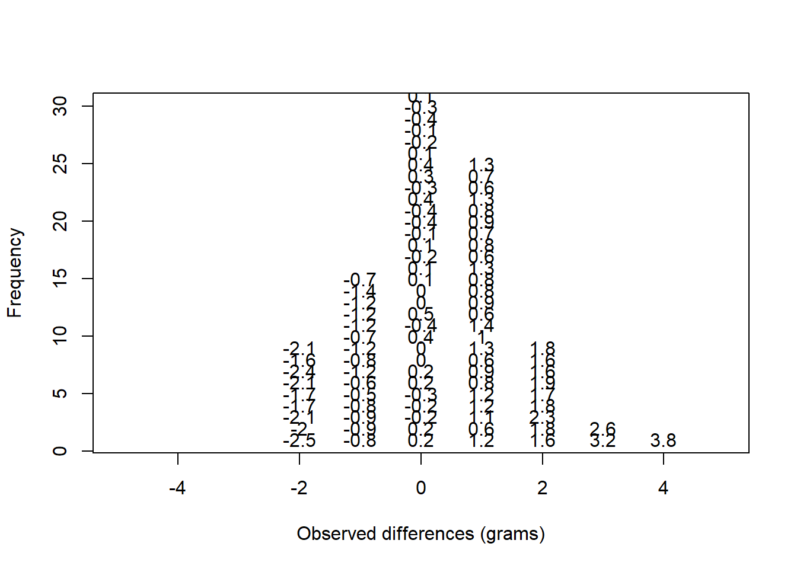
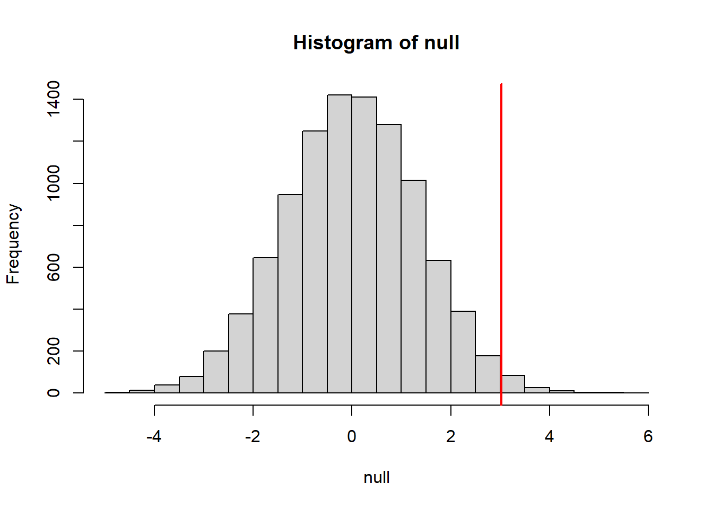

Warning: package 'downloader' was built under R version 4.5.3Introduction to Random Variables
Inference
Introduction
This chapter introduces the statistical concepts necessary to understand p-values and confidence intervals. These terms are ubiquitous in the life science literature. Let’s use this paper as an example.
Note that the abstract has this statement:
“Body weight was higher in mice fed the high-fat diet already after the first week, due to higher dietary intake in combination with lower metabolic efficiency.”
To support this claim they provide the following in the results section:
“Already during the first week after introduction of high-fat diet, body weight increased significantly more in the high-fat diet-fed mice (\(+\) 1.6 \(\pm\) 0.1 g) than in the normal diet-fed mice (\(+\) 0.2 \(\pm\) 0.1 g; P < 0.001).”
What does P < 0.001 mean? What are the \(\pm\) included? We will learn what this means and learn to compute these values in R. The first step is to understand random variables. To do this, we will use data from a mouse database (provided by Karen Svenson via Gary Churchill and Dan Gatti and partially funded by P50 GM070683). We will import the data into R and explain random variables and null distributions using R programming.
If you already downloaded the femaleMiceWeights file into your working directory, you can read it into R with just one line:
dat <- read.csv("femaleMiceWeights.csv")Remember that a quick way to read the data, without downloading it is by using the url:
dir <- "https://raw.githubusercontent.com/genomicsclass/dagdata/master/inst/extdata/"
filename <- "femaleMiceWeights.csv"
url <- paste0(dir, filename)
dat <- read.csv(url)Our first look at data
We are interested in determining if following a given diet makes mice heavier after several weeks. This data was produced by ordering 24 mice from The Jackson Lab and randomly assigning either chow or high fat (hf) diet. After several weeks, the scientists weighed each mouse and obtained this data (head just shows us the first 6 rows):
head(dat) Diet Bodyweight
1 chow 21.51
2 chow 28.14
3 chow 24.04
4 chow 23.45
5 chow 23.68
6 chow 19.79In RStudio, you can view the entire dataset with:
View(dat)So are the hf mice heavier? Mouse 24 at 20.73 grams is one of the lightest mice, while Mouse 21 at 34.02 grams is one of the heaviest. Both are on the hf diet. Just from looking at the data, we see there is variability. Claims such as the one above usually refer to the averages. So let’s look at the average of each group:
library(dplyr)
control <- filter(dat,Diet=="chow") %>% select(Bodyweight) %>% unlist
treatment <- filter(dat,Diet=="hf") %>% select(Bodyweight) %>% unlist
print( mean(treatment) )[1] 26.83417print( mean(control) )[1] 23.81333obsdiff <- mean(treatment) - mean(control)
print(obsdiff)[1] 3.020833So the hf diet mice are about 10% heavier. Are we done? Why do we need p-values and confidence intervals? The reason is that these averages are random variables. They can take many values.
If we repeat the experiment, we obtain 24 new mice from The Jackson Laboratory and, after randomly assigning them to each diet, we get a different mean. Every time we repeat this experiment, we get a different value. We call this type of quantity a random variable.
Random Variables
Let’s explore random variables further. Imagine that we actually have the weight of all control female mice and can upload them to R. In Statistics, we refer to this as the population. These are all the control mice available from which we sampled 24. Note that in practice we do not have access to the population. We have a special dataset that we are using here to illustrate concepts.
The first step is to download the data from here into your working directory and then read it into R:
population <- read.csv("femaleControlsPopulation.csv")
##use unlist to turn it into a numeric vector
population <- unlist(population) Now let’s sample 12 mice three times and see how the average changes.
control <- sample(population,12)
mean(control)[1] 23.47667control <- sample(population,12)
mean(control)[1] 25.12583control <- sample(population,12)
mean(control)[1] 23.72333Note how the average varies. We can continue to do this repeatedly and start learning something about the distribution of this random variable.
The Null Hypothesis
Now let’s go back to our average difference of obsdiff. As scientists we need to be skeptics. How do we know that this obsdiff is due to the diet? What happens if we give all 24 mice the same diet? Will we see a difference this big? Statisticians refer to this scenario as the null hypothesis. The name “null” is used to remind us that we are acting as skeptics: we give credence to the possibility that there is no difference.
Because we have access to the population, we can actually observe as many values as we want of the difference of the averages when the diet has no effect. We can do this by randomly sampling 24 control mice, giving them the same diet, and then recording the difference in mean between two randomly split groups of 12 and 12. Here is this process written in R code:
##12 control mice
control <- sample(population,12)
##another 12 control mice that we act as if they were not
treatment <- sample(population,12)
print(mean(treatment) - mean(control))[1] -0.2391667Now let’s do it 10,000 times. We will use a “for-loop”, an operation that lets us automate this (a simpler approach that, we will learn later, is to use replicate).
n <- 10000
null <- vector("numeric",n)
for (i in 1:n) {
control <- sample(population,12)
treatment <- sample(population,12)
null[i] <- mean(treatment) - mean(control)
}The values in null form what we call the null distribution. We will define this more formally below.
So what percent of the 10,000 are bigger than obsdiff?
mean(null >= obsdiff)[1] 0.0123Only a small percent of the 10,000 simulations. As skeptics what do we conclude? When there is no diet effect, we see a difference as big as the one we observed only 1.5% of the time. This is what is known as a p-value, which we will define more formally later in the book.
Distributions
We have explained what we mean by null in the context of null hypothesis, but what exactly is a distribution? The simplest way to think of a distribution is as a compact description of many numbers. For example, suppose you have measured the heights of all men in a population. Imagine you need to describe these numbers to someone that has no idea what these heights are, such as an alien that has never visited Earth. Suppose all these heights are contained in the following dataset:
data(father.son,package="UsingR")
x <- father.son$fheightOne approach to summarizing these numbers is to simply list them all out for the alien to see. Here are 10 randomly selected heights of 1,078:
round(sample(x,10),1) [1] 67.7 72.5 64.7 62.7 66.1 67.5 68.2 61.8 69.7 71.2Cumulative Distribution Function
Scanning through these numbers, we start to get a rough idea of what the entire list looks like, but it is certainly inefficient. We can quickly improve on this approach by defining and visualizing a distribution. To define a distribution we compute, for all possible values of \(a\), the proportion of numbers in our list that are below \(a\). We use the following notation:
\[ F(a) \equiv \mbox{Pr}(x \leq a) \]
This is called the cumulative distribution function (CDF). When the CDF is derived from data, as opposed to theoretically, we also call it the empirical CDF (ECDF). The ECDF for the height data looks like this:

Histograms
Although the empirical CDF concept is widely discussed in statistics textbooks, the plot is actually not very popular in practice. The reason is that histograms give us the same information and are easier to interpret. Histograms show us the proportion of values in intervals:
\[ \mbox{Pr}(a \leq x \leq b) = F(b) - F(a) \]
Plotting these heights as bars is what we call a histogram. It is a more useful plot because we are usually more interested in intervals, such and such percent are between 70 inches and 71 inches, etc., rather than the percent less than a particular height. It is also easier to distinguish different types (families) of distributions by looking at histograms. Here is a histogram of heights:
hist(x)We can specify the bins and add better labels in the following way:
bins <- seq(smallest, largest)
hist(x,breaks=bins,xlab="Height (in inches)",main="Adult men heights")
Showing this plot to the alien is much more informative than showing numbers. With this simple plot, we can approximate the number of individuals in any given interval. For example, there are about 70 individuals over six feet (72 inches) tall.
Probability Distribution
Summarizing lists of numbers is one powerful use of distribution. An even more important use is describing the possible outcomes of a random variable. Unlike a fixed list of numbers, we don’t actually observe all possible outcomes of random variables, so instead of describing proportions, we describe probabilities. For instance, if we pick a random height from our list, then the probability of it falling between \(a\) and \(b\) is denoted with:
\[ \mbox{Pr}(a \leq X \leq b) = F(b) - F(a) \]
Note that the \(X\) is now capitalized to distinguish it as a random variable and that the equation above defines the probability distribution of the random variable. Knowing this distribution is incredibly useful in science. For example, in the case above, if we know the distribution of the difference in mean of mouse weights when the null hypothesis is true, referred to as the null distribution, we can compute the probability of observing a value as large as we did, referred to as a p-value. In a previous section we ran what is called a Monte Carlo simulation (we will provide more details on Monte Carlo simulation in a later section) and we obtained 10,000 outcomes of the random variable under the null hypothesis. Let’s repeat the loop above, but this time let’s add a point to the figure every time we re-run the experiment. If you run this code, you can see the null distribution forming as the observed values stack on top of each other.
n <- 100
library(rafalib)Warning: package 'rafalib' was built under R version 4.5.3nullplot(-5,5,1,30, xlab="Observed differences (grams)", ylab="Frequency")
totals <- vector("numeric",11)
for (i in 1:n) {
control <- sample(population,12)
treatment <- sample(population,12)
nulldiff <- mean(treatment) - mean(control)
j <- pmax(pmin(round(nulldiff)+6,11),1)
totals[j] <- totals[j]+1
text(j-6,totals[j],pch=15,round(nulldiff,1))
##if(i < 15) Sys.sleep(1) ##You can add this line to see values appear slowly
}
The figure above amounts to a histogram. From a histogram of the null vector we calculated earlier, we can see that values as large as obsdiff are relatively rare:
hist(null, freq=TRUE)
abline(v=obsdiff, col="red", lwd=2)
An important point to keep in mind here is that while we defined \(\mbox{Pr}(a)\) by counting cases, we will learn that, in some circumstances, mathematics gives us formulas for \(\mbox{Pr}(a)\) that save us the trouble of computing them as we did here. One example of this powerful approach uses the normal distribution approximation.
Normal Distribution
The probability distribution we see above approximates one that is very common in nature: the bell curve, also known as the normal distribution or Gaussian distribution. When the histogram of a list of numbers approximates the normal distribution, we can use a convenient mathematical formula to approximate the proportion of values or outcomes in any given interval:
\[ \mbox{Pr}(a < x < b) = \int_a^b \frac{1}{\sqrt{2\pi\sigma^2}} \exp{\left( \frac{-(x-\mu)^2}{2 \sigma^2} \right)} \, dx \]
While the formula may look intimidating, don’t worry, you will never actually have to type it out, as it is stored in a more convenient form (as pnorm in R which sets a to \(-\infty\), and takes b as an argument).
Here \(\mu\) and \(\sigma\) are referred to as the mean and the standard deviation of the population (we explain these in more detail in another section). If this normal approximation holds for our list, then the population mean and variance of our list can be used in the formula above. An example of this would be when we noted above that only 1.5% of values on the null distribution were above obsdiff. We can compute the proportion of values below a value x with pnorm(x,mu,sigma) without knowing all the values. The normal approximation works very well here:
1 - pnorm(obsdiff,mean(null),sd(null)) [1] 0.01311009Later, we will learn that there is a mathematical explanation for this. A very useful characteristic of this approximation is that one only needs to know \(\mu\) and \(\sigma\) to describe the entire distribution. From this, we can compute the proportion of values in any interval.
Summary
So computing a p-value for the difference in diet for the mice was pretty easy, right? But why are we not done? To make the calculation, we did the equivalent of buying all the mice available from The Jackson Laboratory and performing our experiment repeatedly to define the null distribution. Yet this is not something we can do in practice. Statistical Inference is the mathematical theory that permits you to approximate this with only the data from your sample, i.e. the original 24 mice. We will focus on this in the following sections.
Setting the random seed
Before we continue, we briefly explain the following important line of code:
set.seed(1) Throughout this book, we use random number generators. This implies that many of the results presented can actually change by chance, including the correct answer to problems. One way to ensure that results do not change is by setting R’s random number generation seed. For more on the topic please read the help file:
?set.seed